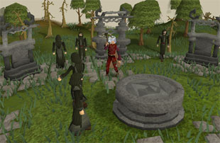
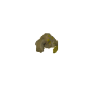
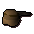
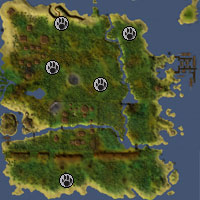
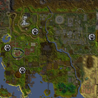
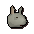
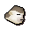
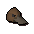

")
Hunter - Extra Features
The Hunter's Crossbow | Ogre Hunting Methods | Catching Pets | Summoning Familiars
Dungeoneering | Quests Providing Hunter Experience
Dungeoneering | Quests Providing Hunter Experience
The Hunters' Crossbow

The kebbit bolts cannot be enchanted or poisoned.
| Crossbow | Required Ranged Level |
Ranged Bonus | Bolts |
![[image]](../../img/main/kbase/skills/hunter/items/hunterscrossbow.gif) Hunters' crossbow |
50 |
+55 | Kebbit bolts |
| Bolts | Item | |
![[image]](../../img/main/kbase/skills/hunter/items/spikebolt.gif) Kebbit bolt |
![[image]](../../img/main/kbase/skills/hunter/items/kebbitspike.gif) Kebbit spike |
|
![[image]](../../img/main/kbase/skills/hunter/items/longspikebolt.gif) Long kebbit bolt |
![[image]](../../img/main/kbase/skills/hunter/items/newkebbitspike.gif) Long kebbit spike |
|
Ogre Hunting Methods
Those hunters who have reached certain stages in As a First Resort... will learn the cunning methods the ogresses of Oo'glog have developed for hunting the odd creatures around their home.
The key to hunting these creatures (diseased kebbits, wimpy birds and platypodes) is the use of correct herbs located outside the town. Some of these herbs will attract one creature while making another enraged. To attract an ogre Hunter creature, you must smoulder these herbs (by using a tinderbox on them); you can use the same herbs as bait in traps, and the diseased kebbit can also be baited with raw meat placed in the deadfall.
| Creature | Hunter Level Required | Trap | Herb | Hunter Experience Gained | |
 Wimpy bird |
39 |
Bird snare |  Tansymum |
167 | |
|  Diseased kebbit |
44 |
Deadfall |  Fever grass |
225 | |
 Platypus |
48 |
Box trap |  Lavender |
205 |
Note: Using the wrong herbs may result in the creatures attacking you! - Wimpy birds will attack if you smoulder lavender. - Diseased kebbits will give you a nasty bite (and infect you with a disease) if you smoulder tansymum. - Platypodes will use their viciously barbed rear feet to poison you if you smoulder fever grass near them.

Diseased kebbits' fur can be sewn into a Davy Kebbit hat if you take one to Frawd, the ogress who runs the Oo'glog general store. Platypodes can be kept as pets (with a Summoning level of 10), which you may then choose to dismiss (using the pet interface) into the reeds at the beach in the east of Oo'glog to receive a reward.
Catching Pets
Using your Hunter and Summoning skills, you can catch a number of baby animals to raise as pets. Platypodes can be caught on the beach south of Oo'glog, as noted above. You can catch baby geckos, squirrels, raccoons and monkeys in the following locations:
| Geckos | Monkeys | |
|

|

|
|
| Raccoons | Squirrels | |
|

|

|
Squirrels and raccoons can also be trapped in the area south of Seers' Village and north of the Sorcerer's Tower.
| Pet | Required Levels | Trapping Method | Bait | Hunter Experience Gained |
 Baby gecko |
27 10 |
Box trap | None | 100 |
|  Baby squirrel |
29 60 |
Net trap |  Nuts |
152 |
 Baby raccoon |
27 80 |
Box trap | None | 100 |
|  Baby monkey |
27 95 |
Box trap |  Banana |
100 |
|  Baby platypus |
48 10 |
Box trap | See 'Ogre Hunting Methods' above | 205 |
Note: that you can only have one of each type of pet at any one time.
Summoning Familiars
Using the Summoning skill, you'll find that there are a few familiars that might be useful for training your Hunter. Of particular note is the arctic bear, who counts as two pieces of arctic camouflage.
Hunter Training in Dungeoneering
It is possible to train all of your skills while dungeoneering, and Hunter is no exception. The wandering and docile bovimastyx can be trapped to gain a large number of hides for crafting into ranged equipment. You can also gain Hunter experience by completing hunter skill doors.
- To find out more about skill doors and the basics of dungeoneering, please click here
- To find out about setting traps in Daemonheim, click here
- To find tables with Hunter requirements and XP levels, click here
Quests Providing Hunter Experience
For quests that specifically give Hunter experience as a reward, please refer to the Hunter Rewards page.

More articles in
Hunter (Members Only)
|
|